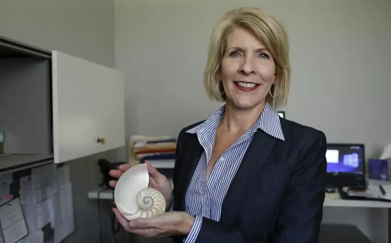

FARGO — The watch Lonnie Pederson wears hasn’t worked for years. And yet, without fail, she fastens it to her wrist every morning like clockwork.
It’s a reminder to count her blessings, or, as she says, “gratitude on the ones.”
“If I mindlessly look down at my watch, I pause to count 11 blessings,” she explains. “Or, if my grocery receipt is $1.11, I smile and stop to count 11 blessings.”
The practice emerged while working on her doctoral dissertation, “Leadership and Spirituality in the Midwest Workplace,” through interviewing, and being mentored by, 20 people of faith. Each, she says, used “spiritual artifacts” in various forms, and viewed spiritual practice as “an unfolding journey of potential.”
A nautilus shell also provides rich meaning — a metaphor for leadership.

“The chamber of nautilus is a spiral of growth, and as it grows it loosens its former shell of existence but never forgets its center, its values, the place from which it came,” she says.
Like the shell, she’s circled back to her beginning.
“I began my career serving single mothers and their families who are living in poverty, and here I am again,” says Pederson, executive director for the Jeremiah Program, which empowers single women with children through education and other support.
Lifelong work
Higher education, health care and human services through community action agencies across North Dakota have all been part of her lifelong work of addressing the needs of women in particular. The draw began in her childhood in Grafton, N.D., where she was raised in a family of all daughters. In college, she served as a resident assistant for an all-female dormitory.
“Then, Jeff and I had two girls, and we have two female granddaughters,” she says, smiling. “It’s always been about the women.”
Later, Pederson obtained her master’s in education with a focus on counseling, then sought her doctorate in leadership from the University of St. Thomas in St. Paul.
“I dedicated my scholarship to the Presentation Sisters (of the Blessed Virgin Mary), because they influenced my journey more than anything,” she says.
Sister Mary Margaret Mooney, who first met Pederson through her husband, Jeff, calls her “one of the good people.” Recalling an Eastern chant which refers to “whispers that come to us in the dawn and don’t go back to sleep,” she says, “Lots of folks hear the whispers of what could be. Lonnie doesn’t go back to sleep. She steps over that threshold and does something.”

Single mothers who complete the 12-week discernment process pay a portion of their income to rent an apartment such as this one at the Jeremiah Program Fargo-Moorhead. Michael Vosburg / Forum Photo Editor
Having been in Pederson’s current spot when Jeremiah Program first came to Fargo-Moorhead, Mooney understands its unique qualifications.
“I knew she had the pulse of what was going on there, based on other experiences working with her,” Mooney says. “Lonnie has that sense of how much children are our future and how we can’t let any of them fall through the cracks.”
Pederson’s connection with the sisters might seem “curious,” as she herself says, given that she’s a lifelong Lutheran. But their inclusivity, along with Pederson’s desire to grow spiritually, melded.
“My interest, that first spark of life and livelihood being connected, began with them,” she says. “I vicariously experienced the charisms of the sisters alive and well, initially in the (nonprofit) organizations my husband served.”
Then, in 1998, she embarked on a leadership pilgrimage with them, studying the lives of the founders of the religious entities that brought health care to America.
“What I marveled at was how steeped in value the organizations were when they were in touch with their core spirituality and their founding. I knew there was something more,” she says.
She’s also been influenced by missionary work. Several decades ago, Pederson co-facilitated two trips to the MaaSae Girls Lutheran Secondary School in Monduli, Tanzania. She and Jeff continue to host women from the school, one of whom now lives here.
“And then, when I was teaching in a professorial role, I led two feminist perspectives of leadership courses to Germany and Italy,” she says.
But Pederson always returns home, where she first saw faith and education exemplified through her parents, particularly her mother, who worked in the state developmental center.
“We would have individuals with disabilities join us for the holidays, so that notion of service, being raised by a woman of faith who had a heart for service… I saw that connection to a life of faith and service and work from the beginning,” she says.
ARCHIVE: Read more of Roxane B. Salonen’s Faith Conversations
‘God’s hand’
North Dakota Sen. Kathy Hogan, D-Fargo, who’s known Pederson for decades, says she’s enjoyed watching her blossom, calling her “the perfect fit” for her current role.
“Those who knew her well knew this was God’s hand putting her in the right place to meet this critical need as Jeremiah moves forward,” Hogan says.
“It’s a gift to the world, a gift to the women she’s working with, but also a gift to Lonnie to have a chance to use all of her skills,” she says, adding that Pederson “has a gift of seeing the holy spark in everyone she encounters.”
Pederson says, “For me, the tagline for Jeremiah Program could read: ‘A place where incredibly strong women reside.’ Because being a single mother is among the most challenging jobs there is.”

The children of parents in Jeremiah Program Fargo-Moorhead ready for a walk Aug. 16 in the center’s preschool. Michael Vosburg / Forum Photo Editor
If she could, she would reach every one of the 2,300 single mothers who currently live in poverty in the Fargo-Moorhead area. Her days revolve around removing the obstacles these women face to ensure a brighter future for themselves and their children, beginning with a stroll through the halls of the Jeremiah residential campus in south Fargo, checking in with the kids who attend the child care program there while their mothers pursue their college degrees.
If ever she needs a reminder of her aims, she need only touch the object which hangs from a chain around her neck — a single acorn, connected to Hebrews 11:1: “Now faith is the substance of things hoped for and the evidence of things not seen.”
“It’s such a wonderful verse that reminds us of the invisibility and potential impact that our spiritual practice can have in our lives,” Pederson says. “We often don’t see it. It’s invisible in the acorn, but becomes so mighty in the unfolding canopy of branches.”
If you go
What: Jeremiah Program 12-week Empowerment Class
When: 5:15 p.m. dinner and 6-8 p.m. class Mondays from Sept. 16 through Dec. 2
Where: 3104 Fiechtner Drive, Fargo
Cost: Free for single mothers 18 or older who are enrolled or intend to in a two- or four-year college or university and their children (restrictions apply); free child care provided
Info: Learn more at www.jeremiahprogram.org/fargo-moorhead; apply by Friday, Sept. 13
[For the sake of having a repository for my newspaper columns and articles, I reprint them here, with permission, a week after their run date. The preceding ran in The Forum newspaper on Aug. 23, 2019.]